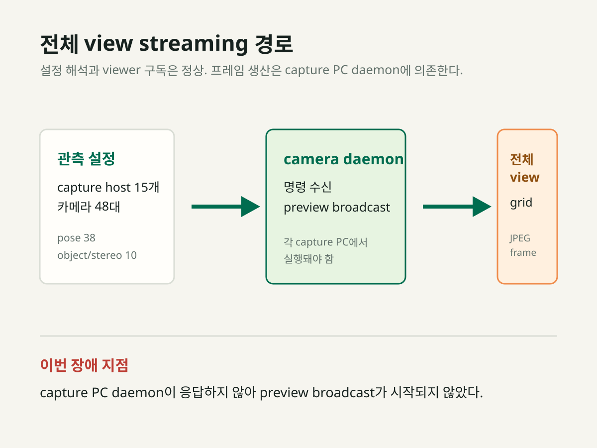
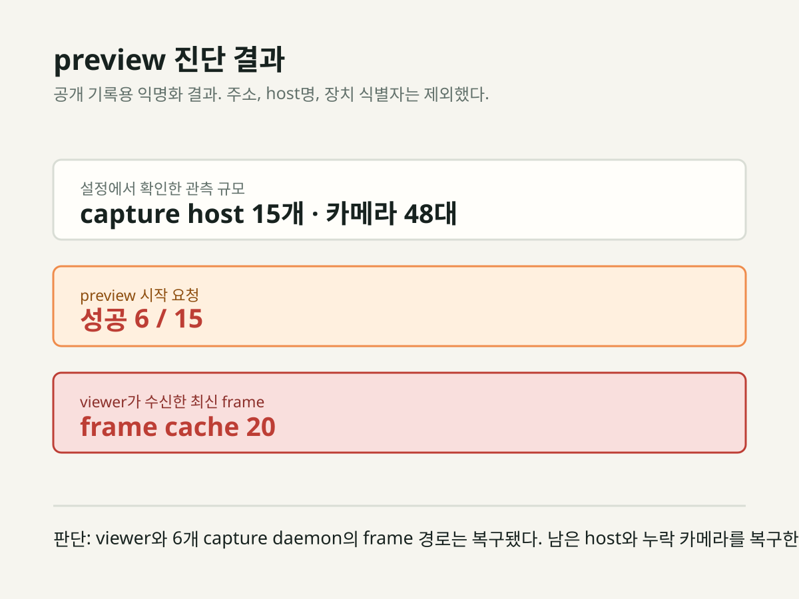
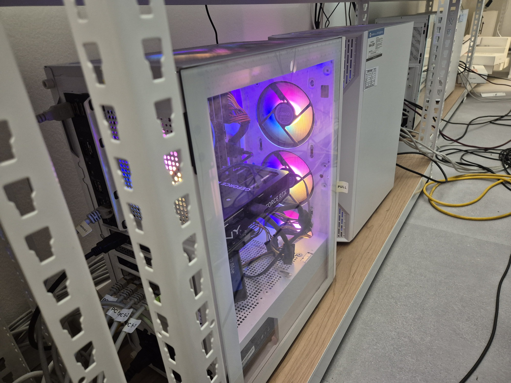
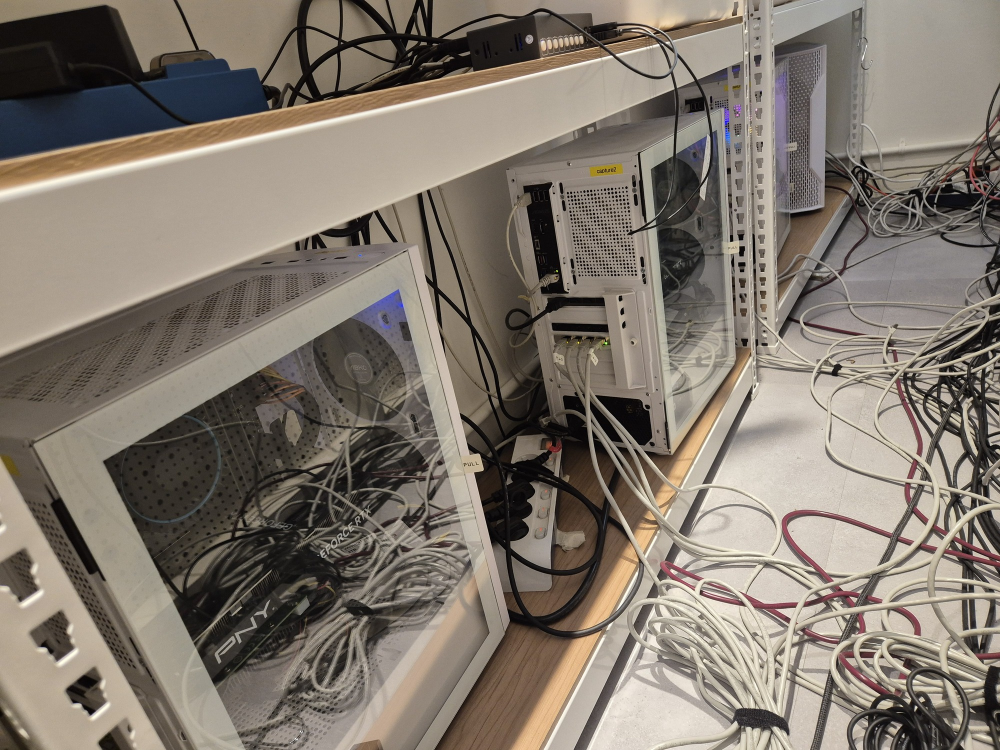
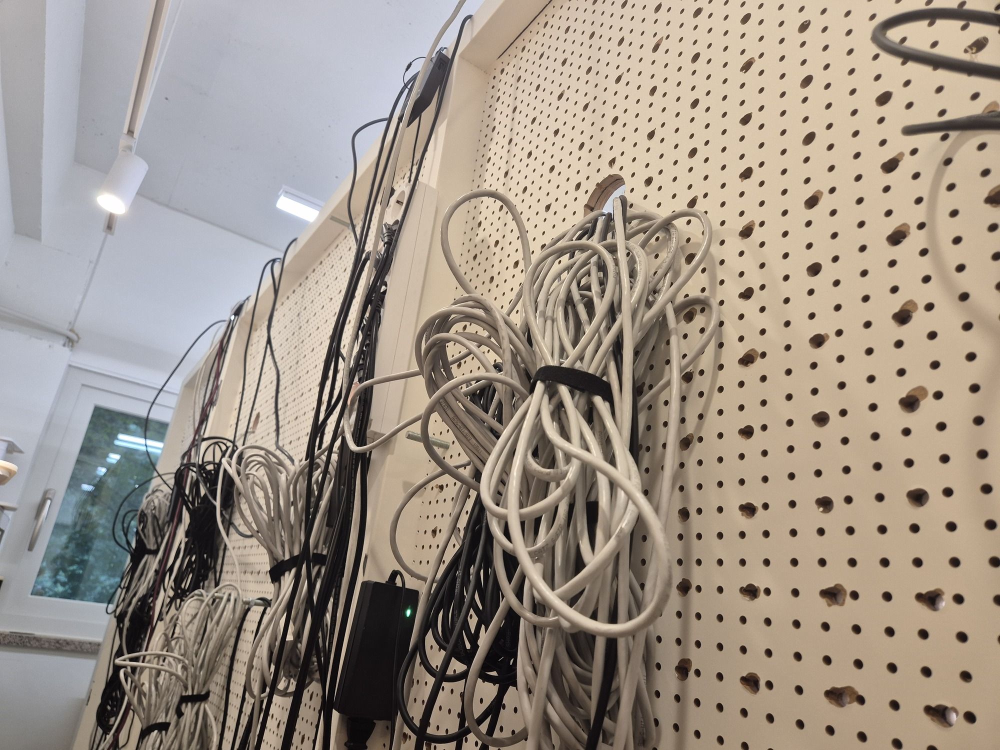
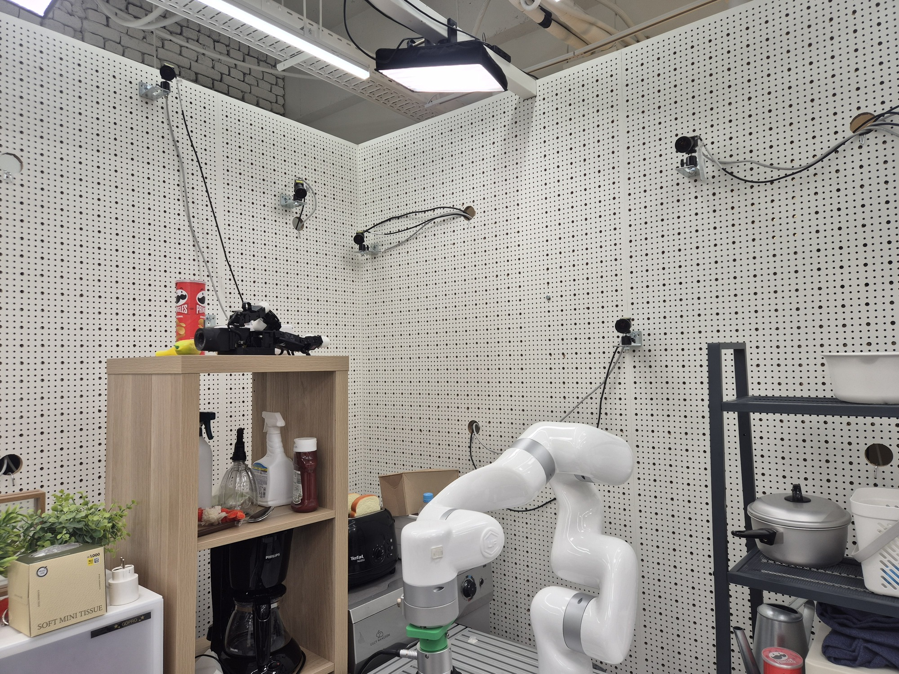

카메라는 등록돼 있었지만, 프레임은 오지 않았다.
기존 다중 카메라 관측 설정에는 연결 구성이 남아 있었고, 전체 view streaming 창도 띄웠다. 전원 투입과 daemon 복구 뒤 6개 capture PC가 preview를 응답했고, 전체 view viewer에서 20개 최신 frame을 수신했다.
1. 설정과 진단 도구
기존 관측 프레임워크의 PC 설정에서 카메라가 연결된 host만 추려 확인했다. pose 관측 38대와 object/stereo 관측 10대, 합계 48대가 15개 capture host에 등록돼 있었다. 이를 대상으로 daemon preview 구독과 시작 명령을 한 창에서 확인하는 로컬 viewer를 구성했다.


전원 투입 뒤의 현장 상태




| 구성 | 확인 결과 |
|---|---|
| 등록된 관측 구성 | capture host 15개, 카메라 48대. pose 38대와 object/stereo 10대로 구분된다. |
| 전체 view viewer | 설정 로딩과 preview 채널 구독은 정상이다. 모든 카메라를 한 grid에서 표시하도록 준비됐다. |
| preview 시작 요청 | 6개 대상이 preview 시작 요청에 응답했다. 성공 수는 6/15이며 나머지 9개는 아직 미가용이다. |
| 수신 frame | viewer cache는 20개 최신 frame으로 갱신됐다. 복구된 daemon과 viewer 사이의 JPEG 경로는 검증됐고, 미복구 대상은 별도로 남아 있다. |
2. capture host별 상태
아래 ID는 공개 기록용 익명 식별자다. 내부 host명·주소·장치 식별자는 포함하지 않았다. 모든 대상에 대해 ICMP, SSH, camera daemon command port, preview port를 같은 시간에 검사했다.
| 익명 host | 카메라 수 | 전원 투입 뒤 관측 | 현재 판단 |
|---|---|---|---|
| H01 | 4 | ARP·ICMP·SSH 응답, command·preview port 열림 | camera daemon과 포트가 복구됨; frame 품질과 누락 카메라를 계속 확인 |
| H02 | 4 | ARP·ICMP·SSH 응답, command·preview port 열림 | camera daemon과 포트가 복구됨; frame 품질과 누락 카메라를 계속 확인 |
| H03 | 4 | ARP·ICMP·SSH 응답, command·preview port 열림 | daemon은 복구됐으나 2/4 frame만 수신; 누락 카메라 열거 필요 |
| H04 | 4 | ARP 미완료, ICMP·SSH·두 daemon port 모두 실패 | 전원, 스위치 link, VLAN 또는 L2 경로 미확인 |
| H05 | 4 | ARP·ICMP·SSH 응답, command·preview port 열림 | camera daemon과 포트가 복구됨; frame 품질과 누락 카메라를 계속 확인 |
| H06 | 3 | ARP 미완료, ICMP·SSH·두 daemon port 모두 실패 | 전원, 스위치 link, VLAN 또는 L2 경로 미확인 |
| H07 | 4 | ARP·ICMP·SSH 응답, command·preview port 열림 | camera daemon과 포트가 복구됨; frame 품질과 누락 카메라를 계속 확인 |
| H08 | 3 | ARP 미완료, ICMP·SSH·두 daemon port 모두 실패 | 전원, 스위치 link, VLAN 또는 L2 경로 미확인 |
| H09 | 4 | ARP 미완료, ICMP·SSH·두 daemon port 모두 실패 | 전원, 스위치 link, VLAN 또는 L2 경로 미확인 |
| H10 | 2 | ARP 미완료, ICMP·SSH·두 daemon port 모두 실패 | 전원, 스위치 link, VLAN 또는 L2 경로 미확인 |
| H11 | 2 | ARP·ICMP·SSH 응답, command·preview port 열림 | camera daemon과 포트가 복구됨; frame 품질과 누락 카메라를 계속 확인 |
| H12 | 2 | ARP 미완료, ICMP·SSH·두 daemon port 모두 실패 | 전원, 스위치 link, VLAN 또는 L2 경로 미확인 |
| H13 | 2 | ARP 미완료, ICMP·SSH·두 daemon port 모두 실패 | 전원, 스위치 link, VLAN 또는 L2 경로 미확인 |
| H14 | 4 | ARP 미완료, ICMP·SSH·두 daemon port 모두 실패 | 전원, 스위치 link, VLAN 또는 L2 경로 미확인 |
| H15 | 2 | 별도 routed subnet, ICMP·SSH·두 daemon port 모두 실패 | 경로 또는 원격 host 상태는 아직 미확인 |
정제된 실행 로그
아래는 같은 진단 실행에서 나온 상태를 공개용으로 정제한 기록이다. CLOSED는 해당 검사 시간 안에 서비스 연결을 만들지 못했다는 뜻이며, 장비 고장으로 단정하지 않는다.
[viewer-after-daemon-recovery] configured_capture_hosts=15 configured_cameras=48 preview_start: ok=6 unavailable=9 frame_cache: 20 [recovered-hosts] H01,H02,H05,H07,H11 daemon=READY preview=OK frames=all-configured H03 daemon=READY preview=OK frames=2-of-4 [remaining-blockers] H04,H06,H08,H09,H10,H12,H13,H14 arp=INCOMPLETE ping=FAIL ssh=FAIL H15 route=GATEWAY ping=FAIL ssh=FAIL
이 로그는 viewer와 daemon 사이의 JPEG frame 경로가 6개 host에서 복구됐고, 남은 문제는 미도달 host와 H03의 일부 카메라 열거임을 보여준다.
3. 무엇을 배제했는가
viewer는 기존 관측 프레임워크가 사용하는 capture host별 daemon command/preview port 규칙으로 연결하고, 같은 preview broadcast 명령을 보낸다. 설정은 정상적으로 해석됐고 구독 소켓도 모두 생성됐다. 그 뒤 명령 포트와 preview 포트를 별도로 점검했을 때도 서비스 응답을 얻지 못했다.
| 관찰 | 해석 |
|---|---|
| 8개 host에서 ARP 미완료 | 카메라 라이브러리나 viewer보다 앞단의 전원·물리 link·스위치·VLAN·L2 경로를 먼저 확인해야 한다. |
| 6개 host는 SSH까지 응답 | 6개 host에서 camera daemon을 시작했고 command·preview port가 열렸다. viewer는 그중 20개 최신 frame을 수신했다. |
| H15는 별도 subnet을 경유 | host가 꺼졌는지, 해당 subnet의 경로·ACL이 막혔는지는 현재 probe만으로 구분할 수 없다. |
| 6개 대상의 preview 명령 성공과 frame cache 20 | viewer와 daemon 사이의 frame 경로는 복구됐다. 남은 host와 H03의 누락 카메라를 복구해야 한다. |
4. 지금 할 수 있는 일
| 우선순위 | 작업 | 성공 기준 |
|---|---|---|
| 1 | H04·H06·H08~H10·H12~H14의 전원 LED, Ethernet link LED, 스위치 포트 상태를 현장에서 확인한다. | 각 대상의 ARP 항목이 생성되고 ICMP가 응답한다. |
| 2 | H01·H02·H03·H05·H07·H11에서 daemon 로그와 frame 수신을 유지 관찰한다. | H03의 누락 2대 열거를 해결하고, 나머지 frame이 지속 갱신되는지 확인한다. |
| 3 | H15가 속한 원격 subnet의 gateway, route, ACL과 host 전원을 담당자 또는 콘솔에서 확인한다. | ICMP 또는 SSH 중 하나가 응답하고 포트 진단을 계속할 수 있다. |
| 4 | 각 daemon 복구 뒤 카메라 serial 열거와 단일 JPEG frame 획득을 확인한다. | viewer cache가 0보다 커지고 최신 frame이 갱신된다. |
| 5 | 필요한 카메라만 포함하는 workcell profile을 만들고 보정을 시작한다. | intrinsic → extrinsic → xArm hand-eye 입력이 실제 frame으로 생성된다. |
5. 현재 판단
capture PC 계층의 첫 복구는 성공했다. 6개 host에서 daemon을 시작했고 viewer는 20개 최신 frame을 받는다. H01·H02·H05·H07·H11은 등록된 카메라 전체 frame을 수신했으며, H03은 4대 중 2대만 열거돼 부분 복구다. 남은 9개 host의 전원·네트워크 복구와 H03의 누락 2대 열거가 다음 차단 지점이다.
6. 검증 기준과 다음 작업
이 이슈를 해결로 바꾸는 조건은 viewer에서 필요한 카메라의 최신 frame이 지속적으로 갱신되고, capture daemon이 재시작 후에도 복구되며, 그 관측으로 보정 입력을 생성할 수 있는 것이다. 이 게이트가 통과될 때까지 BENCH-001의 실기동은 보류한다. 실행 코드의 통합 경계는 ISSUE-003에서 병행 관리한다.